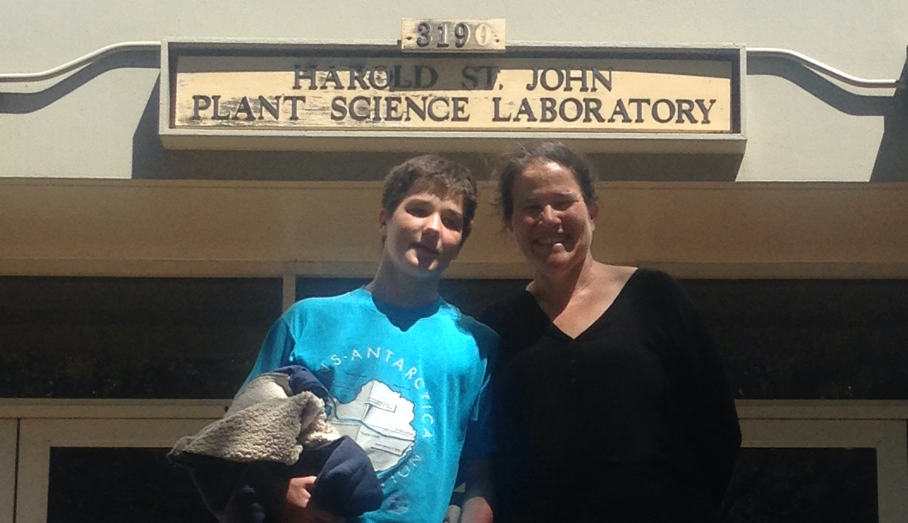

|
| Graduation, 2005 |
|  |
| UH Manoa, 2019 |
 |
| New Zealand, 2020 |

My research interests lie in the intersection of biology, computing, and mathematics, focusing on tree structures used to model evolutionary histories, binary search trees, and ways to compare and visualize these structures. See my research page for recent publications and grant funding and treespace working group for recent activies. If you are a student (undergraduate or graduate) interested in working on a research project, please see my student research page.